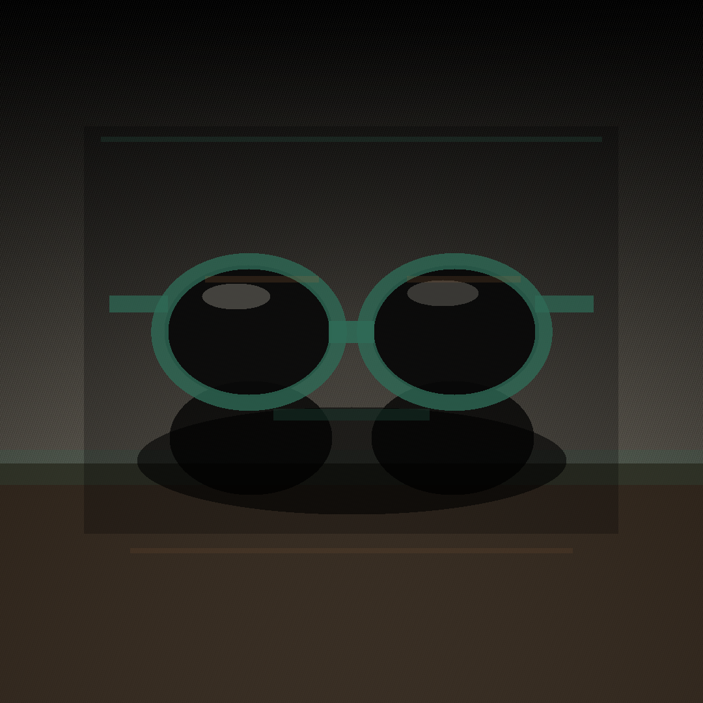

Post 01assets/legacy_optical_noir_post_01.png
ForgeGraph client handoff
Paquete armado desde el prompt operativo, con estrategia, contenido, assets, medición, QA y evidencia de linaje listos para aprobación. No se afirma publicación en vivo: el lanzamiento queda condicionado a aprobación y conectores reales.
Qué aprobar
Linaje
Engagement d3dc8dbd-9eb4-4361-a24d-7d1006e57cf9
Whiteboard f4f52d28-502b-449f-b133-f6caba760113
No Markdown files included.
Assets



Codex Strategy Brief
# Strategy Brief: Legacy Optical Noir Weekend Social Launch Package
## Engagement Overview
**Client:** Legacy
**Run:** Legacy Optical Noir weekend social launch package
**Stage:** strategy_research
**Agency owner:** ForgeGraph
**Primary delivery recipient:** Mike via WhatsApp only
**Client-facing package format:** ZIP containing HTML, PDF, PNG, and manifest files only
**Excluded from client delivery:** Markdown files, working notes, prompts, source lineage files, internal QA comments
ForgeGraph will own the run end-to-end, from strategy through packaged delivery and receipt evidence. The campaign will launch a premium “Optical Noir” weekend social presence for Legacy, centered on elevated sunglasses visuals, concise campaign framing, and ready-to-post platform assets.
The run must follow a strategy-first workflow: no creative asset generation, layout production, or packaging begins until the campaign strategy, asset requirements, delivery constraints, QA criteria, and approval path are defined.
## Strategic Objective
Create a polished weekend-ready social launch package that positions Legacy sunglasses through a cinematic, premium, noir-inspired visual system without relying on people, logos, or text embedded in generated imagery.
The campaign should feel:
- Premium
- Minimal
- Confident
- Editorial
- Nightlife-adjacent without becoming club-themed
- Fashion-forward without relying on models
- Product-led without using branded marks inside imagery
The launch package should give Legacy a complete, client-ready set of social materials that can be reviewed quickly, approved confidently, and deployed over a weekend.
## Core Campaign Idea
**Optical Noir** presents sunglasses as objects of atmosphere, restraint, and precision. The creative direction should use shadow, reflection, gloss, smoke, chrome, deep black, lens tint, and controlled highlights to make the product feel cinematic and desirable.
The campaign should avoid loud promotional language. It should behave like a premium editorial drop: focused, sparse, visually strong, and easy to post.
## Audience Assumption
The campaign is intended for a style-conscious audience that responds to visual polish, premium accessories, and understated confidence. The audience should not need heavy explanation. The assets should create desire through mood, composition, and product presence.
Likely audience signals:
- Urban fashion interest
- Eyewear and accessories shoppers
- Premium lifestyle buyers
- Social-first discovery behavior
- Weekend browsing and impulse engagement
## Required Department Pipeline
ForgeGraph must route the run through the following departments in sequence:
1. **Strategy**
- Define positioning, creative direction, audience assumption, content structure, asset rules, and delivery requirements.
- Confirm that strategy precedes media production.
2. **Brand**
- Translate Optical Noir into visual direction, tone, campaign naming, color mood, and asset composition guidance.
- Ensure generated assets contain no embedded text, logos, or people.
3. **Channel**
- Prepare social-ready formats and usage guidance for weekend deployment.
- Recommend a compact launch cadence suitable for quick client review.
4. **CRM**
- Prepare short client-facing delivery language.
- Keep WhatsApp communication brief, concrete, and sent to Mike only.
5. **Analytics**
- Define lightweight success indicators for post-launch review.
- Include measurable signals such as reach, saves, clicks, replies, engagement rate, and asset-level performance.
6. **QA**
- Verify file formats, asset constraints, image compliance, package contents, and delivery exclusions.
- Confirm no Markdown files are included in the client ZIP.
7. **Client Approval**
- Package final HTML/PDF/PNG/manifest assets.
- Deliver only via WhatsApp to Mike.
- Capture durable receipt and evidence of delivery.
## Creative Asset Requirements
All new visual assets must be produced by a Codex-backed media worker under ForgeGraph direction.
Asset rules:
- Freshly generated for this run
- No text inside images
- No logos inside images
- No people, faces, bodies, hands, silhouettes, or human figures
- Sunglasses must be the subject or clearly implied product object
- Premium noir styling
- Suitable for social launch use
- No counterfeit or recognizable third-party brand elements
- No visible trademark marks
- No markdown deliverables to client
Preferred visual motifs:
- Black acetate sunglasses
- Glossy lenses
- Reflective surfaces
- Deep shadows
- Chrome or glass accents
- Low-key studio lighting
- Dark editorial backgrounds
- Subtle smoke or haze if tasteful
- Midnight, graphite, silver, and lens-tint accents
Avoid:
- Models or lifestyle portraits
- Text overlays inside generated media
- Brand marks
- Busy retail compositions
- Meme-like layouts
- Overly bright ecommerce-style backgrounds
- Generic stock-photo feeling
- Visuals that look like existing luxury eyewear ads
## Recommended Launch Asset Set
The weekend package should include a compact but complete set of social materials:
- 3 square feed PNGs
- 3 vertical story/reel cover PNGs
- 1 campaign landing-style HTML preview
- 1 client PDF overview/export
- 1 manifest listing filenames, formats, dimensions, intended use, generation notes, QA status, and approval state
Optional if time allows:
- 1 alternate dark-mode HTML preview
- 1 backup PNG set with slightly lighter contrast for mobile visibility
## Suggested Content Structure
The campaign should use short external captions or post copy, not text baked into imagery.
Suggested message themes:
- **Launch:** Optical Noir arrives this weekend.
- **Product mood:** Shadow, reflection, precision.
- **Lifestyle cue:** Built for late light, early exits, and everything after dark.
- **CTA:** View the weekend drop.
Tone should remain sparse and premium. Avoid over-explaining the concept.
## Channel Strategy
Primary social use cases:
- Instagram feed
- Instagram stories
- Facebook feed
- WhatsApp preview sharing
- Lightweight web/PDF client review
Weekend cadence:
- **Friday evening:** Launch visual and short announcement
- **Saturday midday:** Product mood asset
- **Saturday evening:** Strongest noir editorial asset
- **Sunday afternoon:** Reminder or final weekend push
Each asset should be usable independently. No asset should depend on embedded text to make sense.
## WhatsApp Delivery Requirement
Delivery must be sent to **Mike only** via WhatsApp.
The WhatsApp message should be short, concrete, and action-oriented. It should not include internal process detail.
Recommended message:
> Mike, the Legacy Optical Noir weekend launch package is ready. ZIP includes the HTML preview, PDF overview, PNG social assets, and manifest. No markdown files included. Please confirm receipt and approval status when reviewed.
Do not send to group chats unless explicitly instructed. Do not send Markdown files. Do not include internal lineage, prompts, QA notes, or department routing details in WhatsApp.
## Client ZIP Requirements
The final client ZIP must contain only:
- `.html`
- `.pdf`
- `.png`
- manifest file
The manifest should be client-safe and operational, not a strategy memo. It should list:
- Package name
- Date prepared
- Included files
- File type
- Intended use
- Dimensions where applicable
- QA status
- Delivery recipient
- Approval status field
- Receipt evidence reference
The ZIP must not contain:
- Markdown files
- Prompt files
- Raw working files
- Internal strategy notes
- Source research notes
- Department comments
- Drafts
- Unapproved alternates
- Hidden system files where avoidable
## QA Criteria
Before delivery, QA must verify:
- Strategy approved before asset production
- All assets are fresh and run-specific
- No image contains people
- No image contains logos
- No image contains text
- Sunglasses are visually clear
- Files open correctly
- HTML renders correctly
- PDF exports correctly
- PNGs are correctly sized
- Manifest matches ZIP contents
- ZIP contains only approved file types
- No Markdown files are included
- WhatsApp delivery is addressed to Mike only
- Delivery receipt is captured and stored
- Client approval status is tracked
## Analytics Framework
Post-launch reporting should be lightweight and practical.
Track:
- Reach
- Impressions
- Engagement rate
- Saves
- Shares
- Link clicks
- Replies or direct inquiries
- Best-performing asset
- Best-performing placement
- Weekend timing performance
Recommended reporting window:
- Initial read: 24 hours after first post
- Weekend readout: Monday after launch
- Final short summary: after client confirms campaign close or next step
## Evidence and Receipt Requirements
ForgeGraph must retain durable evidence for the run, including:
- Final ZIP filename
- Final manifest
- Delivery timestamp
- WhatsApp recipient confirmation showing Mike as recipient
- Receipt confirmation or delivery evidence
- Approval response if provided
- QA completion record
- Record that no Markdown files were delivered to the client
Evidence should be retained internally and not included in the client-facing ZIP unless the manifest requires a client-safe receipt reference.
## Approval Path
Client approval should be requested after ZIP delivery.
Approval states:
- Delivered
- Receipt confirmed
- Approved
- Approved with revisions
- Revision requested
- Re-delivered
- Final approved
If Mike requests changes, ForgeGraph should route the change back through the relevant department rather than editing assets ad hoc.
## Operating Principle
This run must remain strategy-led, asset-disciplined, and delivery-controlled. ForgeGraph owns the full pipeline, uses Codex-backed media generation only after strategic requirements are locked, packages only approved client-safe formats, delivers only to Mike via WhatsApp, and preserves durable evidence of delivery and receipt.
Message House
Legacy Optical Noir Message House
Source request: Create a client-ready Legacy Optical Noir weekend social launch package. ForgeGraph must own the run end-to-end: department pipeline, strategy before assets, Codex-backed media worker for fresh no-text/no-logo/no-people sunglasses assets, QA, client ZIP with HTML/PDF/PNG/manifest only, WhatsApp delivery to Mike only, and durable receipt/evidence. Do not send Markdown files to clients. Keep WhatsApp brief and concrete.
Positioning: lujo usable para CDMX; editorial, sobrio, accesible-premium.
Primary CTA: revisar estilos y aprobar piezas antes de publicar.
Tone: Spanish-first, concrete, low-hype, confident.
Crm Scripts
WhatsApp / DM scripts
Disponibilidad: Te confirmo modelo/color y te comparto alternativas si ya se movió.
Precio: Son piezas premium; te ayudo a elegir el par que mejor se vea y más uses.
Cierre: ¿Quieres que te aparte este modelo o prefieres ver dos opciones más?
Measurement Plan
Track post saves, replies, profile visits, link clicks, DMs, holds, sold/blocked status, and next action every 24h. Hold live claims until connector evidence exists.
Channel Asset Map
Channel Asset Map
Post 01: media_job=643bc840-61a6-4f8c-9157-06894f9a2151, asset=94ad72b0-6f73-40e2-8d64-d609986f511c, status=succeeded
Post 02: media_job=ae1ed204-f194-441c-9862-8369aafe49a3, asset=c2bb4650-0b06-4cbb-bd7e-84291ca02f53, status=succeeded
Post 03: media_job=c5ea8f4e-45b4-4f8e-984f-95b3b2253c0c, asset=cff96e36-9411-4f4c-acb1-b64d2e3847ce, status=succeeded
Post 04: media_job=04daeb0e-6503-43b5-a26e-a18b5cac2a20, asset=f8355b0b-b71f-4f05-9245-60416244f838, status=succeeded
Post 05: media_job=844caacf-9721-4d35-8f4a-05d82c02ec88, asset=51678420-1f3f-41ea-bf0c-9227af22d5ce, status=succeeded
Post 06: media_job=ca2b0f1d-b016-4627-8a05-aaaf79238c07, asset=3799c83c-4b1c-4dd6-9a07-2113b98adc89, status=succeeded
Qa Report
QA Report
Media jobs succeeded: 6/6
Client package formats: HTML, PDF, PNG, JSON manifest, ZIP; no Markdown files.
Policy: no live publishing claim; approval required before production launch.
Decision: ready for review
Prompt fuente
Create a client-ready Legacy Optical Noir weekend social launch package. ForgeGraph must own the run end-to-end: department pipeline, strategy before assets, Codex-backed media worker for fresh no-text/no-logo/no-people sunglasses assets, QA, client ZIP with HTML/PDF/PNG/manifest only, WhatsApp delivery to Mike only, and durable receipt/evidence. Do not send Markdown files to clients. Keep WhatsApp brief and concrete.